Project Overview
Although Reddit is primarily a desktop experience, many users also use mobile and sometimes strictly only mobile as it is a form of mobile social media. Having the same functionality as the desktop site is crucial for all users as there may be instances of not having access to a desktop, as well as many other social media platforms offer most, if not all, functionality as the desktop versions.
We live in an era where everything is starting to be accessible on mobile devices, so in theory, having access to all tools and resources is becoming mandatory.
The Problem
Users are unable to change their passwords or account info in the app
Users may get lost finding their upvoted (and downvoted and hidden posts)
Users may not find the private message feature
Users may get lost finding their upvoted (and downvoted and hidden posts)
Users may not find the private message feature
The Solutions
Add account settings to the app, and bring certain elements more to the front than hiding it.
Goals & Outcomes
After an evaluation of the existing app, identify 3 problematic areas, articulate why they are problematic and propose solutions for an improved user experience. Using a combination of user testing and evaluative review of the app design; identify opportunities for an improved experience and provide potential solutions to address concerns.
Users & Audience
The target users are Redditors (people who use Reddit). Redditors tend to have multiple hobbies, various demographics, and different motivations for being on Reddit.
However, they all collectively like to share and consume information in an open forum, consisting of topics within hobbies and news and media.
We analyzed 7 users throughout this test, with ages ranging from 22 to 27, who use both web and mobile Reddit.
However, they all collectively like to share and consume information in an open forum, consisting of topics within hobbies and news and media.
We analyzed 7 users throughout this test, with ages ranging from 22 to 27, who use both web and mobile Reddit.
Scope
The goal of this case study is to determine 3 problems with the app and offer solutions to make them better for users. Budget and development is no problem, as these are minor additions and revisions to the app.
Research
I conducted 3 remote user tests, utilizing screen capture and recording. By allowing the users to freely attempt the tasks, we are able to see the natural thought process and successes/failures of the user.💢 Problem 1: Unable to change password
Let’s say you were signed out of Reddit from desktop but you were still signed in on the Reddit app on your phone. You go to try to find your password or change it, so you can sign on the computer. Or, there was suspicious activity and you have to urgently change your password and you’re only on your phone. For whatever reason, when using the Reddit app, you will notice that there is no specific place or menu to change passwords, emails, or security settings. Not having the ability to change your password may leave the user signed out and unable to use their app or account on web.
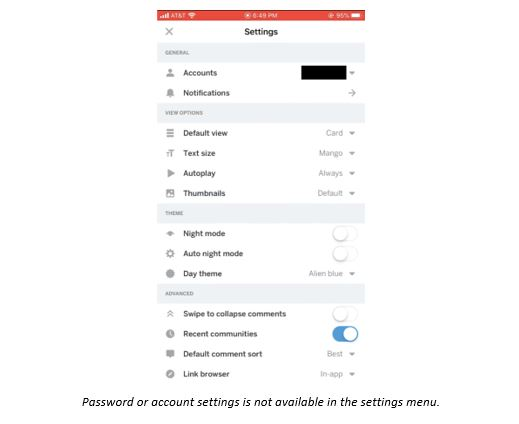
Why is this a problem?
Having the ability to change your passwords on a mobile device / app is very common nowadays, and almost mandatory to have, as someone may not have a computer accessible to them to do so. Some users don’t even have emails connected to their accounts, so there is no way to recover their passwords with the “reset password†function. If users need to Google search how to do a simple task on an app, then the app must be improved.
👤 P1
P1 attempts to change their password by going into their My Profile to edit their profile, but with no luck. P1's next attempt is by going into Settings, and looking at Accounts, only to find that there is nothing about passwords, then finally checking personalization preferences with no luck. P1 then gives up on the task.
Having the ability to change your passwords on a mobile device / app is very common nowadays, and almost mandatory to have, as someone may not have a computer accessible to them to do so. Some users don’t even have emails connected to their accounts, so there is no way to recover their passwords with the “reset password†function. If users need to Google search how to do a simple task on an app, then the app must be improved.
👤 P1
P1 attempts to change their password by going into their My Profile to edit their profile, but with no luck. P1's next attempt is by going into Settings, and looking at Accounts, only to find that there is nothing about passwords, then finally checking personalization preferences with no luck. P1 then gives up on the task.
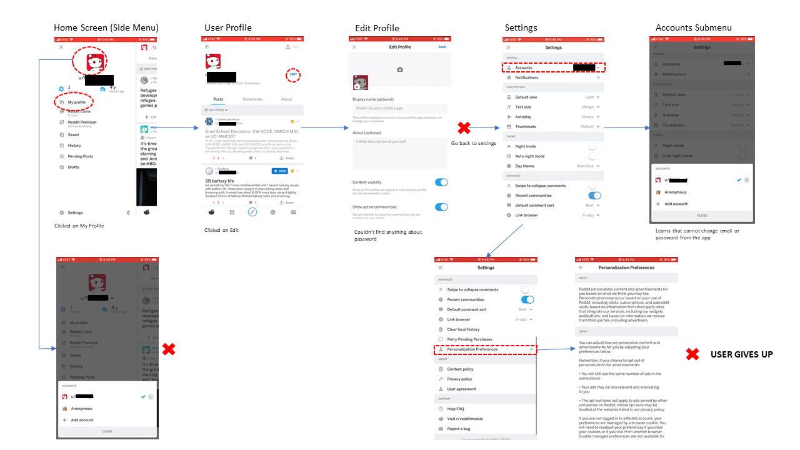
👤 P2
P2 attempts to change their password by going to Settings, then Accounts, then signs out of Reddit and chooses "Forgot password". This is a last resort option, but ONLY works if the user has their email connected to the account for password recovery. If not, the user will be locked out of their account until they remember their password.
P2 attempts to change their password by going to Settings, then Accounts, then signs out of Reddit and chooses "Forgot password". This is a last resort option, but ONLY works if the user has their email connected to the account for password recovery. If not, the user will be locked out of their account until they remember their password.
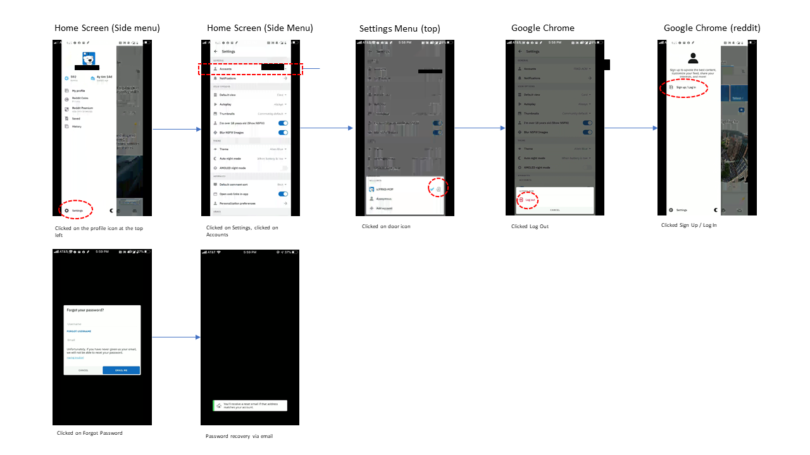
👤 P3
P3 attempts to change their password by going into their Settings, and checking Accounts, only unable to find it especially after looking through the Settings menu. P3 then searches online to find out how to change password, only to find out that they're unable to do so unless on desktop.
P3 attempts to change their password by going into their Settings, and checking Accounts, only unable to find it especially after looking through the Settings menu. P3 then searches online to find out how to change password, only to find out that they're unable to do so unless on desktop.
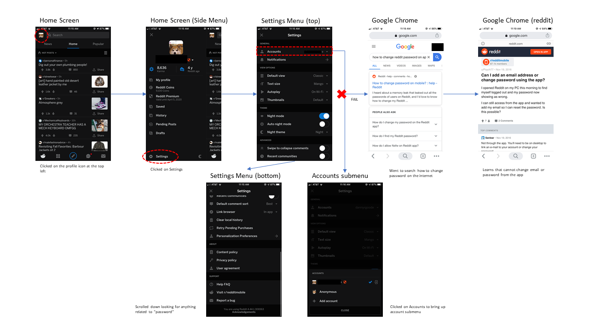
Justification
When users think of terms such as “password”, “change (setting)”, “email”, “account”, “security”, they most often associate it with “Settings†which is a widely used term for a menu regarding information and details within their account and on apps.
“So first task is to change my password, so I would look for some kind of account settings†– P1
“(In settings) I’m looking for something that says password†– P2
“I would’ve thought password would be somewhere in settings or under accounts…†– P3
“I couldn’t find it so I just Googled how to change my password from the app†– P3
“Most apps nowadays let you change your password from the app, so I don’t know why I can’t.†– P1
“It would suck if I got locked out of my account or I was told to change my password but I wasn’t at a computer to do so. Some people are primarily mobile only users… †– P1
✔️ Solution
Include an easy to find setting, menu, or screen that has security settings such as changing password, email, and other security related settings without leaving the app. This feature should be found under “Settings†menu.
When users think of terms such as “password”, “change (setting)”, “email”, “account”, “security”, they most often associate it with “Settings†which is a widely used term for a menu regarding information and details within their account and on apps.
“So first task is to change my password, so I would look for some kind of account settings†– P1
“(In settings) I’m looking for something that says password†– P2
“I would’ve thought password would be somewhere in settings or under accounts…†– P3
“I couldn’t find it so I just Googled how to change my password from the app†– P3
“Most apps nowadays let you change your password from the app, so I don’t know why I can’t.†– P1
“It would suck if I got locked out of my account or I was told to change my password but I wasn’t at a computer to do so. Some people are primarily mobile only users… †– P1
✔️ Solution
Include an easy to find setting, menu, or screen that has security settings such as changing password, email, and other security related settings without leaving the app. This feature should be found under “Settings†menu.
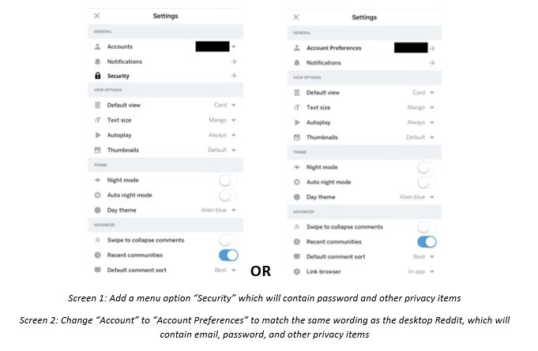
💢 Problem 2: Hard to Find Upvoted/Downvoted Posts
Let’s say that you were talking to a friend when a relevant post comes to mind that you remember seeing on Reddit and want to bring it up to show to your friend. You go into the app to look for the post since you upvoted it, but you’re having some trouble finding where the post is at. When using the Reddit app, finding your upvoted and downvoted posts is a bit hidden compared to some of the other features in the app. This may be tedious and or difficult to find for users who mainly use Reddit on desktop.
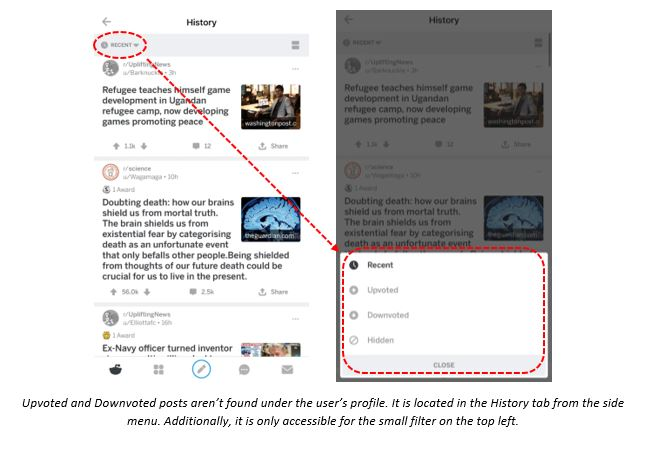
Why is this a problem?
Compared to the desktop version of Reddit, getting to the upvoted and downvoted posts is hidden under a filter, under an unfamiliar menu (for desktop users). Desktop Reddit shows their upvoted and downvoted posts on a tab menu at the top when viewing their profile. A user may assume the same when trying to find their upvoted/downvoted posts on the app.
👤 P1
P1 attemtps to find their upvoted posts by going to their Inbox and checking the activity tab, and pressing the drop down. Goes into Settings then eventually goes to History and presses the drop down at the top.
Compared to the desktop version of Reddit, getting to the upvoted and downvoted posts is hidden under a filter, under an unfamiliar menu (for desktop users). Desktop Reddit shows their upvoted and downvoted posts on a tab menu at the top when viewing their profile. A user may assume the same when trying to find their upvoted/downvoted posts on the app.
👤 P1
P1 attemtps to find their upvoted posts by going to their Inbox and checking the activity tab, and pressing the drop down. Goes into Settings then eventually goes to History and presses the drop down at the top.
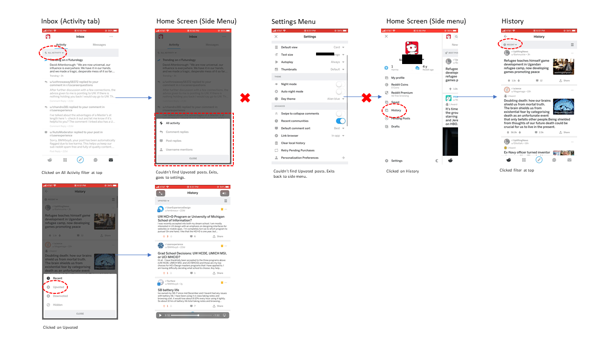
👤 P2
P2 is successful and that they find the History menu and choose from the drop down menu.
P2 is successful and that they find the History menu and choose from the drop down menu.

👤 P3
P3 goes into their own profile, then presses the drop down menu, thinking their upvoted posts would be there, but it is only their submitted posts. P3 then goes into History and finds the drop down menu successfully.
P3 goes into their own profile, then presses the drop down menu, thinking their upvoted posts would be there, but it is only their submitted posts. P3 then goes into History and finds the drop down menu successfully.
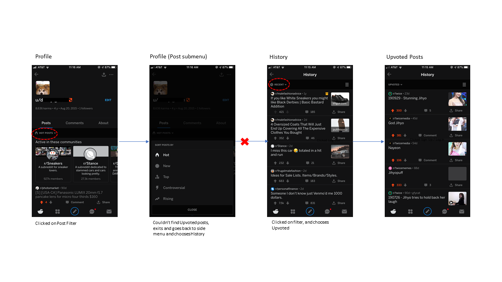
Justification
Because users who are familiar with the desktop Reddit, they will naturally go to their profile to find something related to the terms “Upvoted†and “Downvoted”. By placing the two under “History†it is not a familiar term, which makes finding the two terms difficult. Users most often went into “My profile†first, thinking it was under there, to which they had no luck. Their second guess was to go into History.
“Okay, well it’s not in Activity…†– P1
“History? Okay so these are recents… maybe it’s [upvoted posts] is here- oh there it is†– P1
“I would go to My Profile because when I go on it on the computer, the upvoted posts are located at the top somewhere†– P3
When they arrive to the History page, their posts are hidden under a filter at the top left. Although there is nothing else on the screen which may prompt users to open it, it’s not clear what is inside the filter and if their upvoted and downvoted posts will be contained there. By implementing Solution 1 or Solution 2, users can easily see and find their posts without needing to guess.
✔️ Solution
1. Instead of putting a “History†option and hiding the upvoted/downvoted under a filter menu, place the “Upvoted†and “Downvoted†menu options in the same side menu.
Because users who are familiar with the desktop Reddit, they will naturally go to their profile to find something related to the terms “Upvoted†and “Downvoted”. By placing the two under “History†it is not a familiar term, which makes finding the two terms difficult. Users most often went into “My profile†first, thinking it was under there, to which they had no luck. Their second guess was to go into History.
“Okay, well it’s not in Activity…†– P1
“History? Okay so these are recents… maybe it’s [upvoted posts] is here- oh there it is†– P1
“I would go to My Profile because when I go on it on the computer, the upvoted posts are located at the top somewhere†– P3
When they arrive to the History page, their posts are hidden under a filter at the top left. Although there is nothing else on the screen which may prompt users to open it, it’s not clear what is inside the filter and if their upvoted and downvoted posts will be contained there. By implementing Solution 1 or Solution 2, users can easily see and find their posts without needing to guess.
✔️ Solution
1. Instead of putting a “History†option and hiding the upvoted/downvoted under a filter menu, place the “Upvoted†and “Downvoted†menu options in the same side menu.
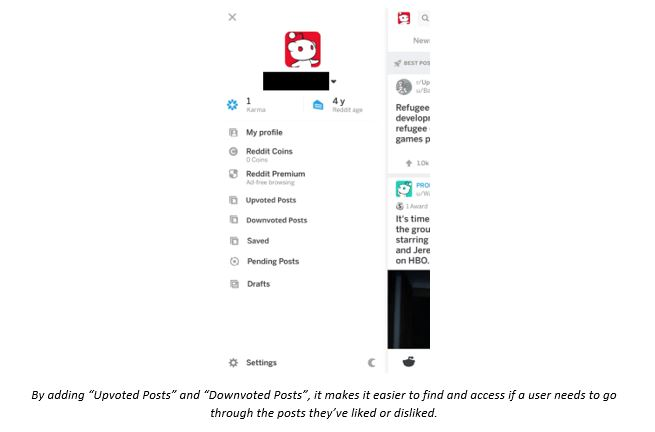
2. It can also be placed in a tab slider menu instead if it must be located in “History”.
💢 Problem 3: Sending a Direct Message is Hidden
Similarly, to problem 2, it is a bit hard to find how to message a user from their profile, and not so obvious from the messaging tab in the message menu. Additionally, Reddit has implemented the Chat feature which is optimized more for the app, but not desktop. Most users are accustomed to the traditional direct/private message feature than chat.

Why is this a problem?
Actually, trying to send a direct message through both the desktop and app version is not very obvious. Sharing posts and making comments is the bread and butter of Reddit, but it is very common to message other users. Trying to message someone and not being able to find a quick way to do so can be tedious. Because users would need to navigate to a persons username, click on it, go to their profile, then press the 3 dots menu at the top to find the direct message option. Similarly to the website version, the direct message feature is hidden in a drop down menu.
👤 P1
P1 successfully messages a random user by exploring the 3 dots menu at the top of the profile.
Actually, trying to send a direct message through both the desktop and app version is not very obvious. Sharing posts and making comments is the bread and butter of Reddit, but it is very common to message other users. Trying to message someone and not being able to find a quick way to do so can be tedious. Because users would need to navigate to a persons username, click on it, go to their profile, then press the 3 dots menu at the top to find the direct message option. Similarly to the website version, the direct message feature is hidden in a drop down menu.
👤 P1
P1 successfully messages a random user by exploring the 3 dots menu at the top of the profile.
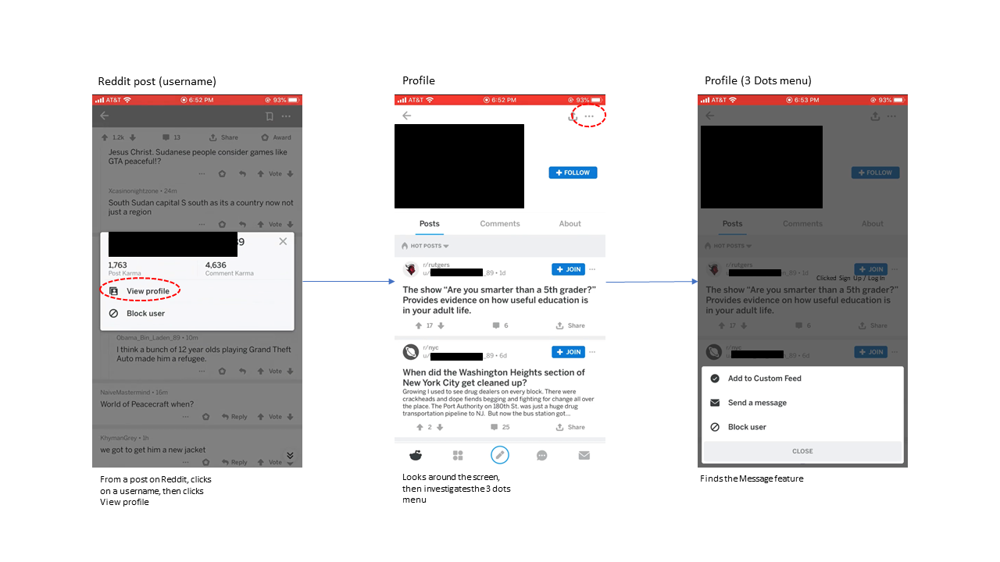
👤 P2
P2 attempts to direct message a random user, however, uses the Chat feature, which is different from direct message. P2 doesn't understand the difference between direct message and Chat.
P2 attempts to direct message a random user, however, uses the Chat feature, which is different from direct message. P2 doesn't understand the difference between direct message and Chat.
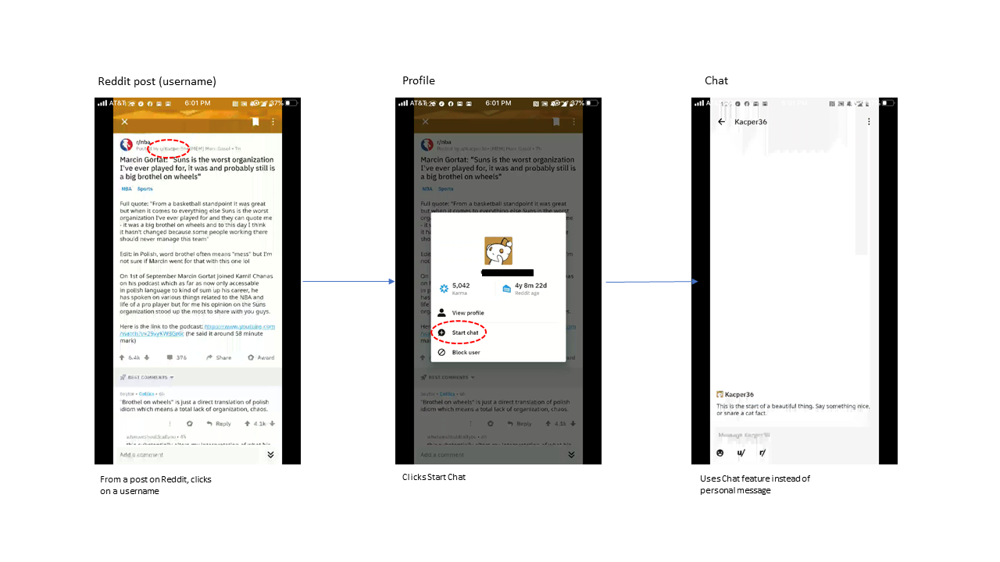
Justification
Most social media apps and websites that offer messaging between users tend to make the feature readily accessible as direct messages should be “direct”. Because messaging between users is an important function on Reddit, it makes sense to make the option more obvious than hidden. The infamous 3 dots icon is notorious for users not knowing what’s “inside”. There is no artefacts or hints that would let a user know that the messaging feature is within the menu.
“I didn’t know there was a difference between chat and message†– P1
“I guess it might be in here [dots menu]- oh here it is†– P2
“I expected a message button when I clicked on this person’s username†– P1
✔️ Solution
Most social media apps and websites that offer messaging between users tend to make the feature readily accessible as direct messages should be “direct”. Because messaging between users is an important function on Reddit, it makes sense to make the option more obvious than hidden. The infamous 3 dots icon is notorious for users not knowing what’s “inside”. There is no artefacts or hints that would let a user know that the messaging feature is within the menu.
“I didn’t know there was a difference between chat and message†– P1
“I guess it might be in here [dots menu]- oh here it is†– P2
“I expected a message button when I clicked on this person’s username†– P1
✔️ Solution
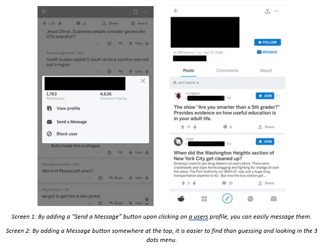
For messaging a user from their profile, there should be a button upon clicking on the username as well as on their profile.
3/3 participants were able to find their upvoted/downvoted posts, however, 2/3 found it after looking around the rest of the app before finding it.
2/3 participants were able to find how to direct message another Redditor. 1 participant chose Chat instead of direct message.
From this simple user test, we found that although the participants found the features they were looking for, it was a fairly long and difficult process for them to figure it out.
The Reddit app could benefit from bringing these features more foreward and accessible to the user, to lessen the load and increase speed and user experience of the app.
For changing passwords, I decided to add a section dedicated to it, as any other mobile app usually provides. By adding it under the Accounts section, or by adding a dedicated Security section, users will easily be able to find and change their password.
For finding upvoted posts, I decided that I could scrap the History tab entirely or add a top menu slider to increase discoverability and consistency.
For sending messages, I decided to add a "Send a Message" button on the user profile and username popup, as it will bring forward the messaging feature to the user.
Problem 1: Password / account settings Problem 2: Upvoted post page discoverability Problem 3: Message feature discoverability
Problem 1: Password / account settings Problem 2: Upvoted post page discoverability Problem 3: Message feature discoverability
Although the Reddit app itself has some good UX and visual design, there are some features of the app that seem to be overlooked which may make or break someone’s experience. There should be no reason why the Reddit app shouldn’t have account preferences such as changing email and passwords, as well as security and privacy settings. Most social media apps provide those sorts of settings and features, why can’t Reddit have it if it’s available on the desktop version? Although the other 2 problems are a bit less crucial, it’s surprising to have these features be hidden when they are easily accessible and easy to find on the desktop version. If users (especially avid users of Reddit) need to search online how to do something on the app, there must be something that could be improved.
Findings
0/3 participants were able to change their passwords or figure how to change account settings on the Reddit app. It was not understood by all participants that it is only available on the web version. P2 decided to sign out of the app then choose Forgot Password.3/3 participants were able to find their upvoted/downvoted posts, however, 2/3 found it after looking around the rest of the app before finding it.
2/3 participants were able to find how to direct message another Redditor. 1 participant chose Chat instead of direct message.
From this simple user test, we found that although the participants found the features they were looking for, it was a fairly long and difficult process for them to figure it out.
The Reddit app could benefit from bringing these features more foreward and accessible to the user, to lessen the load and increase speed and user experience of the app.
Design Decisions
For changing passwords, I decided to add a section dedicated to it, as any other mobile app usually provides. By adding it under the Accounts section, or by adding a dedicated Security section, users will easily be able to find and change their password.
For finding upvoted posts, I decided that I could scrap the History tab entirely or add a top menu slider to increase discoverability and consistency.
For sending messages, I decided to add a "Send a Message" button on the user profile and username popup, as it will bring forward the messaging feature to the user.
Wireframing
Problem 1: Password / account settings Problem 2: Upvoted post page discoverability Problem 3: Message feature discoverability
Prototyping
Problem 1: Password / account settings Problem 2: Upvoted post page discoverability Problem 3: Message feature discoverability
Conclusion
Although the Reddit app itself has some good UX and visual design, there are some features of the app that seem to be overlooked which may make or break someone’s experience. There should be no reason why the Reddit app shouldn’t have account preferences such as changing email and passwords, as well as security and privacy settings. Most social media apps provide those sorts of settings and features, why can’t Reddit have it if it’s available on the desktop version? Although the other 2 problems are a bit less crucial, it’s surprising to have these features be hidden when they are easily accessible and easy to find on the desktop version. If users (especially avid users of Reddit) need to search online how to do something on the app, there must be something that could be improved.